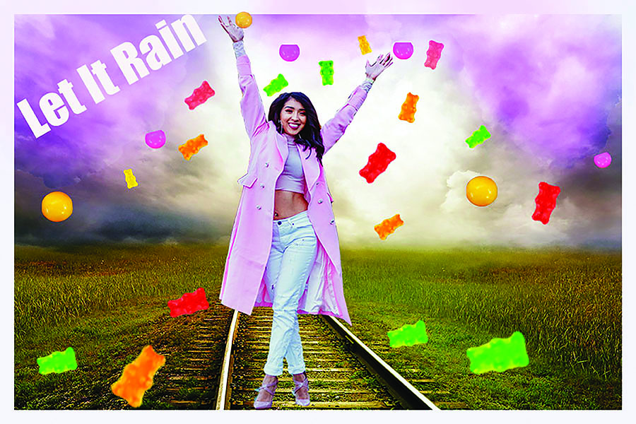

<!doctype html>


<html>

</html>
<head>
     <title>CINTHYA NUNEZ</title>
    

    <link rel="stylesheet" href="css/nunez%20cinthya_webfinal.css"> 
    
</head>
<body>
    <div class="container">
        
        
    
    
        <header> </header>
        

        
        <p>My raster project was my favorite because i got to learn how to use photoshop.My inspiration for this project was the path that i decide to take on something new in my life.I am a candy lover and i decided to have falling gummy bears from the ky. Pink and purple are my two favorite colors. For my rater project i decide to add pink and purple clouds. The difficult challenges with this project was  blending out the colors but after trying out different techniques i manage to get i perfect. </p>

        


        
    
    <a href="index.html">Home</a>|
    
    <a href="photoshop.html">Photoshop</a>|
    
    <a href="Vector.html">Vector</a>|
    
    <a href="Time%20Based%20Media.html">Time Based Media</a>|
        
         <a href="Print.html">Print</a>|
    
    <a href="Contact.html">Contact<a>|

    
    
        </div>
  
</body> 